This is a list of the mobs and what they do.
PASSIVE MOBS
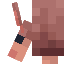
The armadillo: This is a passive mob that is found in acacia biomes, they are rare and when brushed with a brush drop armadillo scutes which can be turned into wolf armour for your pet dog.
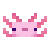
The axolotl: This is a passive mob that can be found in lush caves, they are common in that biome and can be found in every water area of the lush cave, they cant be tamed and have no real purpose, they can be taken in a bucket and placed in other water areas, they can also be bred with tropical fish.
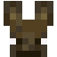
The bat: This is a passive mob that can be found in all caves, they are common and have no useful purpose other than making caves less desolate.
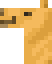
The camel: This is a passive mob that can be found in deserts, they are uncommon and one is confirmed in a dessert village, they can be tamed by sitting on it(right clicking it) multiple times until red hearts apear, they can be used to carry items and can be ridden by two players at once(with a saddle), they can also jump over 2 block high obstacles.
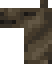
The camel husk: This is a passive mob that can be found rarely in desserts at night, when spawned a husk spawns on top of it, they can be tamed by sitting on it(right clicking it) multiple times until red hearts apear, they can be used to carry items and can be ridden by two players at once, they can also jump over 2 block high obstacles.The cat: This is a passive mob that can be found in villages, they are common and can be tamed by giving them fish, they can be used to scare creepers and phantoms, they also give you a gift when you sleep.
The chicken: This is a passive mob that can be found in the most biomes(not dessert, ice biomes and oceans), they are common and can be used for food and feathers, they can be bred with seeds.
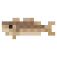
The cod: This is a passive mob that can be found in the water, they are common, can be fished with a fishing rod, and can be used as food.
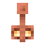
The copper golem: This is a passive mob that can be made when you put a carved pumpkin on a copper block, this mob sorts items in chests, this happens as when there is an item in the copper chest the golem spawns with the golem will put it in a normal chest with the same item, it oxedises over time and when its fully oxedises it freezes and stops moving.The cow: This is a passive mob that can be found in most biomes(not dessert, ice biomes and oceans), they are common and can be used for food and leather, they are bred with wheat and if right clicked with a bucket(milked) the bucket will be filled with milk and milk can remove any effect on you.
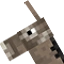
The donkey: This is a passive mob that can be found in plains and savanas, they are uncommon and can be tamed by sitting on it(right clicking it) multiple times until red hearts apear, they can be used to carry items and can be ridden by one player(with a saddle).
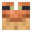
The frog: This is a passive mob that can be found in swanps, they are common and if they eat a small magma cube they drop froglights, which can be used as a light source, they can be bred with slime balls, when they are bred they make frog spawn and that will hatch into tadpoles, the tadpoles can be put in a bucket and taken to a different biome, the type of frog they grow up into depends on where the tadpoles grow up.
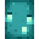
The glow squid: This is a passive mob that can be found in water under the ground, they are uncommon and drop glow ink sacs which can be used to make text on a sign glow(by right clcking it with the glow inc sac).
The happy ghast: This is a passive mob that can be attained by getting a dried ghast from a soul sand biome then putting it in water(in the overworld), after 20 minutes it will become a young happyghast and then after another 20 mminutes it will become an adult, you can ride the happy ghast by right clicking is with a harness then rightclicking again to sit on it and ride(fly), with that you can easily travel and also lead other mobs/boats to it in order to make them fly with it.
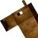
The horse: This is a passive mob that can be found in plains and savanas, they are uncommon and can be tamed by sitting on it(right clicking it) multiple times until red hearts apear, they can be used to carry items and can be ridden by one player with a saddle, they are bred with either golden carrots or golden apples, they can drop some leather.
The mooshroom: This is a passive mob that can be found in mushroom islands, they are uncommon and can be used for food and leather, they can be bred with wheat and if right clicked with a bowl(milked) the bowl will be filled with mushroom soup and the soup will fill your hunger bars, if right clicked with shears it will turn into a normal cow, and if struck by lightning it will become a brown mooshroom
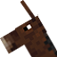
The mule: This is a passive mob that can only be bred, it is bred when one horse and one donkey are bred together, they can be tamed by sitting on it(right clicking it) multiple times until red hearts apear, they can be used to carry items and can be ridden by one player with a saddle.
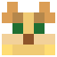
The ocelot: This is a passive mob that can be found in jungles, they are uncommon, they can be used to scare creepers and phantoms.
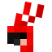
The parrot: This is a passive mob that can be found in jungles, they are uncommon and can be tamed by giving them seeds, when tamed they can sit on your shoulder by just walking into it, a max of two parrots because you only have two shoulders(or are you an alien?) and if music is being played from a jukebox near them they start dancing!.The pig: This is a passive mob that can be found in most biomes(not dessert, ice biomes and oceans), they are common and can be used for food, they can be bred with carrots, potatoes or beetroots, if right clicked with a saddle you can ride it and if you have a carrot on a stick in your hand you can control it with the direction you are facing being the direction the pig walks.
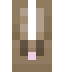
The rabbit: This is apassive mob that can be found in the snowy, desert and forrest biomes, they are uncommon and can be used for food, they drop rabbit, rabbit hide and very rarely a rabbit foot, they can be bred with corrots and the rabbit meat can be turned into rabbit stew with a bowl, rabbit meat, a carrot, a baked potato and a brown muchroom all put in a crafting table.
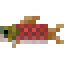
The salmon: This is a passive mob that can be found in the water, they are common, can be fished with a fishing rod, some times when killed can drop bonemeal, and can be used as food.
The sheep: This is a passive mob that can be found in most biomes(not dessert, ice biomes and oceans), they are common and can be used for food and wool, they can be bred with wheat, they can be dyed by right clicking them with any colour dye and if right clicked with shears they will drop wool.
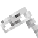
The skeleton horse: This is a passive mob that spawns during a thinderstorm and if found will be struck by lightning and then 3 more will apear with powerfull skeletons on their back(so be careful when you see one!), They drop up to 2 bones on death and can be tamed by sitting on it and then ridden with a saddle.
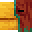
The sniffer: This is a passive mob that can be spawned/hatched by putting a sniffer egg on a block of moss, the egg is obtained by brushing suspicous sand/gravel with a brush or by breeding two sniffers with a torch flower, the sniffer sniffs the ground every so often and digs up one of two ancient seeds, these two seeds are the torchflower seed(which is needed to breed them for more sniffer eggs) and the pitcher pod, when either are planted they will grow into the respective plant.
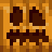
The snow golem: This is a passive mob that like the copper golem can be made by putting a carved pumpkin on top of block(s), in this case those blocks are two snow block that are stacked on top of each other, if sheared with shears they remove their pumpkin and become a snow man, they throw snowballs at hostile mobs and can be used to make snow farms, as they leave a trail of snow behind them when walking on grass or dirt and when the snow in dug up it instantly regenerates.
The squid: This is a passive mob that can be found in water, they are common and drop ink sacs which can be used to make black dye.
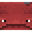
The strider: This is a passive mob that can be found n the nether lava ocean, they are uncommon and can be ridden with a saddle, they can be controlled by holding a warped fungus on a stick in your hand and the direction you are facing is the way the strider will walk, they are helpful as they can walk on the lava andhelp you go over them easier.
The sulfur cube: This is a passive mob that can be found in sulfur caves, the biome is rare however these mobs are common in that biome, this mob can be picked up in a bucket and taken to other places, if this mob is right clicked with a block the sulfur cube absorbs it and then it gets differeent abilities, for example if a tnt block is absorbed the sulfur cube with explode if in contact with a magma block(they also become unkillable if a block is absorbed).
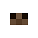
The tapdole: This is a passive mob that is the baby of the frog, and can be bred from the frog when slime balls are given to them, they grow up into frogs and if right clicked by a water bucket they go in it and can be transported to other places.
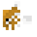
The tropical fish: This is a passive mob that can be found in warm oceans and lush caves, they are common, if right clicked with a water bucket they will be picked up and can be transported to other locations, there are 2,700 different types of tropical fish, this is because there are 2 different body types, 6 patterns, 15 body colours and 15 pattern colours, when killed they drop tropical fish which can be used as a food and they travel in schools of up to 9 fish.
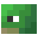
The turtle: This is a passive mob that can be found on beaches, they are uncommon, can be bred with sea grass, when they are bred they lay turtle eggs(but be cafeful because zombified piglins will try to break them) and they drop up to 2 sea grass upon death.
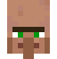
The villager: This is a passive mob that spawns in a village, a village is a structure that can spawn in plains, savanah, snowy and deserts, the villager can sell you items for emeralds and buys items for emeralds as well, villagers can be given different jobs with different blocks, by placing the block near the villager(for example if a fletching table is placed the villager will become a fletcher), in order to breed two villagers you must drop bread to them so they pick it up and place beds near them, after some time a baby villager will spawn, if you hit one villager it will go to other ones and tell it, because of that all the told villagers will give you more expensive trades, if there are 3 or more villagers that are threatened by a zombie or other mobs an iron golem will spawn to protect them, if a villager is hit by a zombie it will turn into a zombie villager and in order to cure a zombie villager back into a normal villager you must splash it with a wekness potion then right click it with a golden apple.
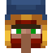
The wandering trader: This is a passive mob that spawns any where in the overworld with a 48 block radius of the player with 2 trader lammas on a leash, if you hit the wandering trader the lammas will start to spit on you, just like the villager you can buy and sell items from a wander trader with emeralds however these are not themed items like books from a librarian or a sword from a weaponsmith, these trades are for random items such as saplings and sea pickles, upon death it doesnt drop anything however if you kill the lammas you will get one leash per lamma and the wandering trader sometimes drinks invisability potions and thus becomes invisable.
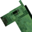
The zombie horse: This is a passive mob that spawns in plains and savanas, like the horse it can be tamed by right clicking it until hearts apear and then ridden with a saddle, it spawns with a zombie on top of it so if you see onr be careful, upon death they drop up to 2 rotton flesh.
HOSTILE MOBS